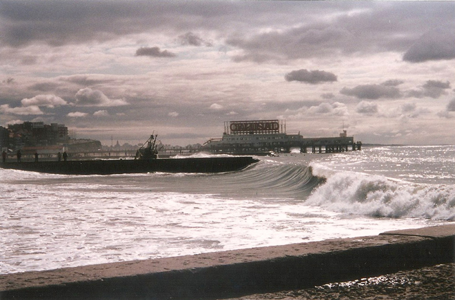
The seventh largest city in Argentina, Mar del Plata is a resort on the Atlantic coast. We visited at the end of the tourist season when it was returning to a sort of sleepy torpor when many of the attractions were closing.
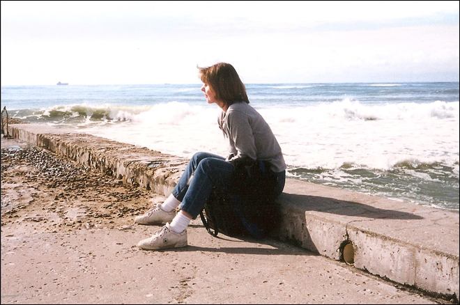
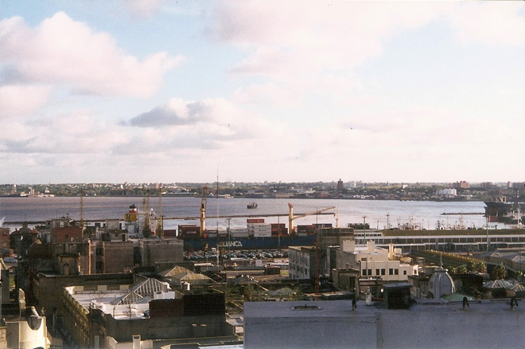
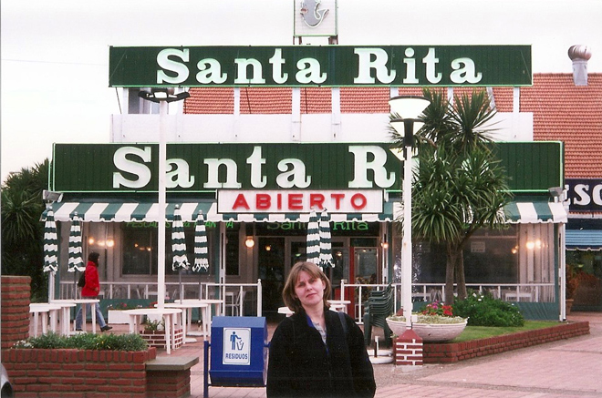
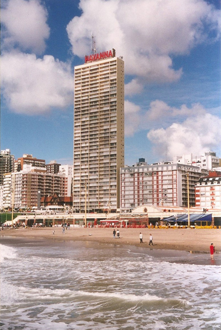
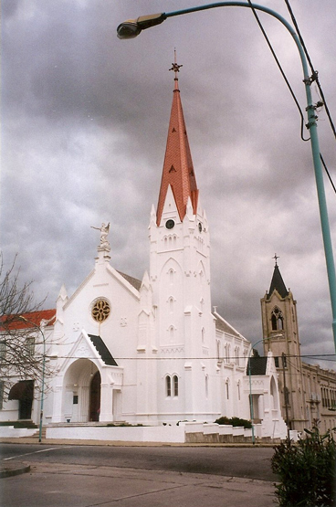
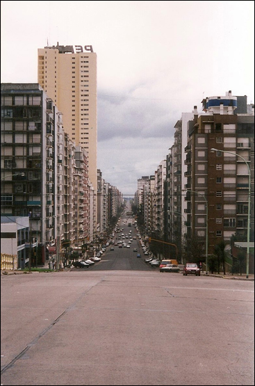
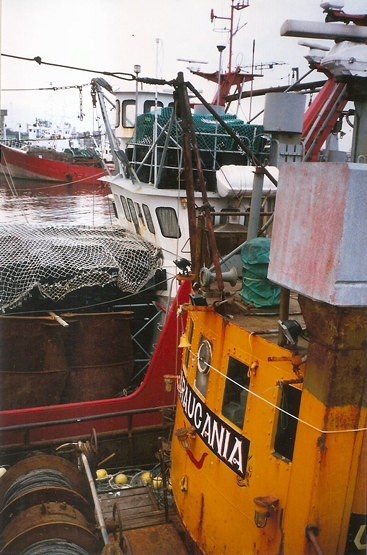
Mar del Plata is one of the major fishing ports and has a sizeable fishing industry.
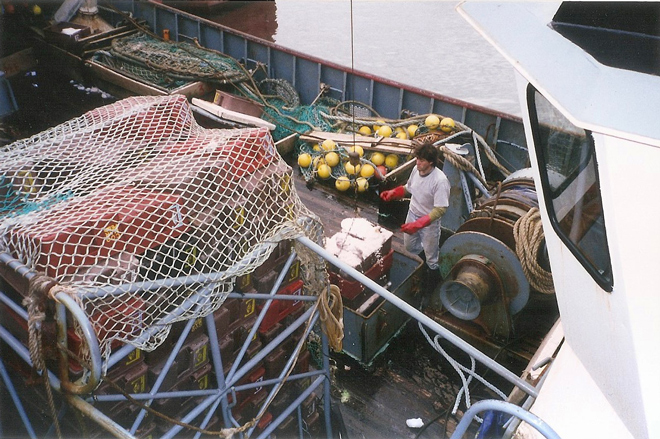
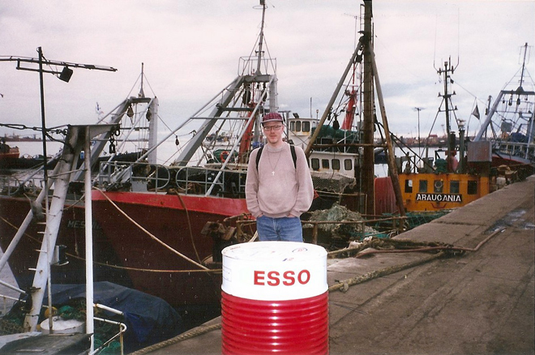
Argentines seem to be good Catholics and like a virtuous shrine as much as the next person. Here we found one conveniently placed outside a steak restaurant ...
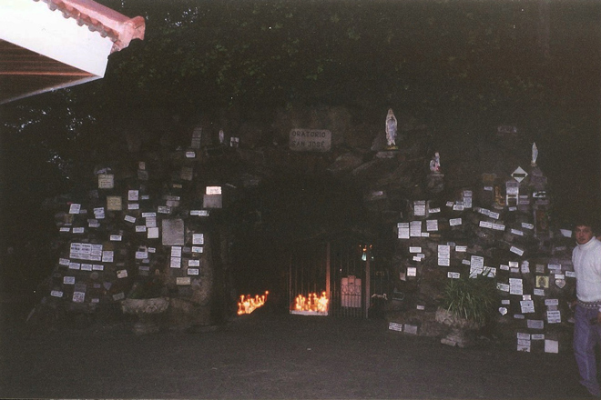
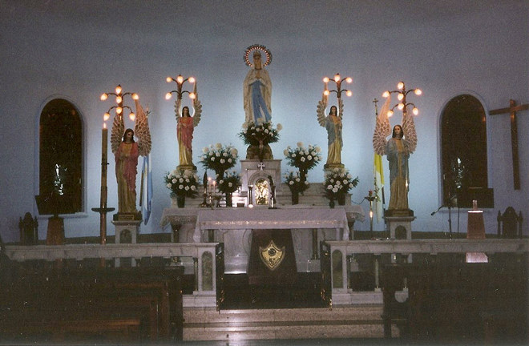